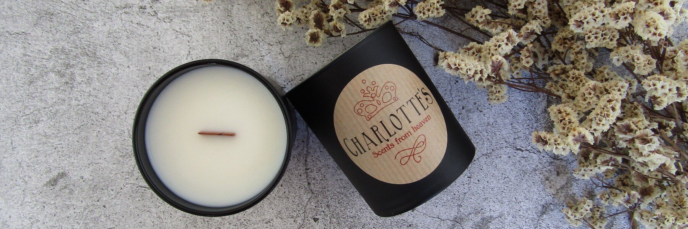
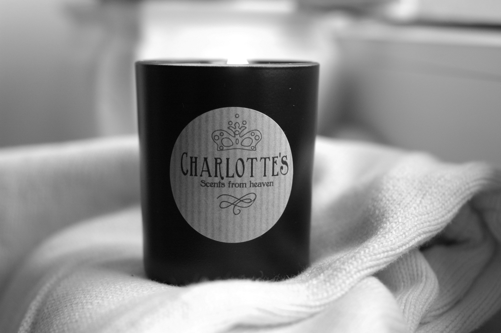

NATURAL SOY WAX CANDLES & MELTS
Try our new scents
Blog Posts
Let Your Light Shine

4 quick tips to help you get more productive at home
You probably don’t need us to tell you that scents can have a huge impact on the way we feel – part of why our scented candles are so universally popular!
Tips and Tricks: Changing your wax melts!
There’s nothing better than lighting your wax melts, curling up on the sofa in your PJ’s and watching your favorite movie, but what happens when you need to change your wax? Its sometimes a living NIGHTMARE!
Scent is your own story
We are Charlotte’s scents, a small but motivated family-owned company. We are, and always have been, family owned, something that makes our approach more personal and heartfelt every step of the way.
My Goal as a mum was to bring a more natural way of keeping my home smelling more homely and fresh without using damaging products.
I then realized, not only I could do this, but I could have fragrances that were even better than what was being supplied by retailers. Once I found a solution I found it difficult not to share it.
And now...
My Goal as a mum was to bring a more natural way of keeping my home smelling more homely and fresh without using damaging products.
I then realized, not only I could do this, but I could have fragrances that were even better than what was being supplied by retailers. Once I found a solution I found it difficult not to share it.
And now...